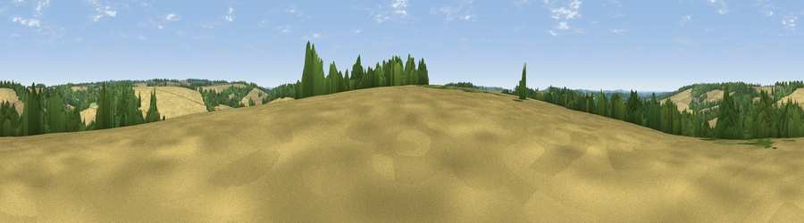

Viewpoint near Langrish
#40247 in England · top 63% of its area beats it · near LangrishWhere it is
The exact computed spot (SU 67675 25775). Click the marker for map links.
The view, rendered

A 360° render of this exact spot computed from the terrain model, tree cover and land cover — summer colours, afternoon light, calibrated against photographs of famous viewpoints. Real trees, hedges and buildings will differ in detail.
The panorama
Grey silhouette: terrain skyline in each direction (720 bearings, Earth curvature and refraction included). Dashed green: skyline with trees (+15 m) and buildings (+8 m) as obstacles. Blue strip: how far the ground is visible on each bearing.
Where the view opens
Wedge length = distance to the farthest visible ground on that bearing (vegetation-aware). Rings at 10, 25 and 50 km.
What fills the view
60% cropland · 27% woodland · 13% grassland
Angular shares of the visible panorama (visual magnitude), not map area. Landscape diversity 0.41 (0–1 Shannon).
Key numbers
More beautiful places nearby
The staircase of upgrades: each row has a higher view potential than everything closer. Driving times are estimates from straight-line distance, calibrated against real road routing — check an actual route before setting out.
| Place | Direction | Drive | Score |
|---|---|---|---|
| Old Down | SSW · 0 km | ~2 min | 35.7 |
| Barrow Hill | SSE · 4 km | ~10 min | 54.1 |
| Viewpoint near East Meon | S · 5 km | ~11 min | 60.6 |
| Viewpoint near East Meon | S · 6 km | ~12 min | 61.2 |
| Salt Hill | S · 6 km | ~13 min | 74.3 |
| Viewpoint near Meonstoke | SW · 6 km | ~13 min | 74.8 |
| Viewpoint near Buriton | SE · 6 km | ~14 min | 75.3 |
| Viewpoint near Buriton | SE · 7 km | ~14 min | 80.0 |
51.02737, -1.03638 · source: screening · position refined by local search. Computed location — check access rights before visiting.